UTF-8 and fonts
Latin, Greek, Cyrillic, CJK, combining characters and monochrome emoji. DejaVu Sans Mono Nerd Font is included, with fallbacks for other scripts. Right-to-left layout is not supported.
For the AROS Shell
Limpet runs the native AROS Shell in a window with UTF-8 text, 24-bit colour, scrollback, search, copy and paste, clickable links and inline images. Your commands, scripts and assigns stay as they are.
Open source (MIT) · PC & Raspberry Pi · Version 0.10.1
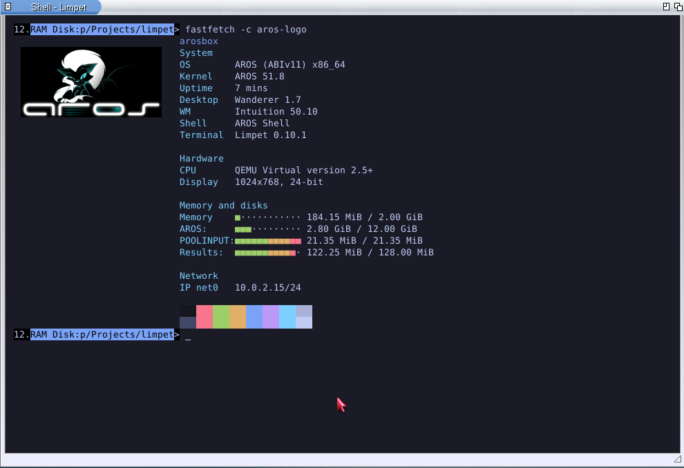
Why Limpet
I wanted a modern terminal on AROS, so I started building Limpet.
The AROS console, CON:, shows Latin-1 text in a handful of pens. Tools written in the last twenty years expect more: UTF-8, 256 and 24-bit colours, links, a screen they can redraw. Without that, ports of current command-line programs either look broken or need a special AROS mode.
Limpet is meant to become the console you use every day. That means two things at once: existing AROS software keeps working as it does in CON:, and current command-line tools, full-screen programs and remote sessions over SSH work as they do elsewhere.
Today Limpet runs beside the system console. The Shell inside it is the ordinary AROS Shell; Limpet is the window, the text renderer, the keyboard and the history. The experimental handler can already stand in for CON:.
The comparison on the right uses one test program that sends the same bytes to both consoles without asking first. It covers these sequences on the named system and is not a complete compatibility table.
| Bytes sent | CON: | Limpet |
|---|---|---|
| UTF-8 text: Polish letters, CJK, an emoji | shown as Latin-1 characters | shown correctly |
ESC[31m | pen 1 | pen 1, as in CON: |
256 colours, ESC[38;5;196m | ignored | bright red |
24-bit colour, ESC[38;2;255;128;0m | ignored | orange |
| OSC 8 link | sequence printed as text | label shown as a link |
| Capability query (DOS packet) | ERROR_ACTION_NOT_KNOWN | colour level, pens, size |
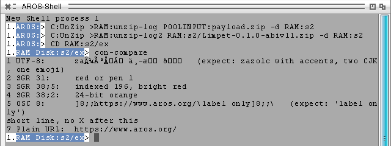
CON:.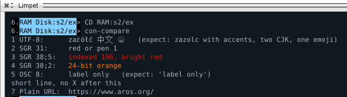
Shell features
Everything below works with the standard AROS Shell and its commands. Nothing needs to be installed besides Limpet.
Latin, Greek, Cyrillic, CJK, combining characters and monochrome emoji. DejaVu Sans Mono Nerd Font is included, with fallbacks for other scripts. Right-to-left layout is not supported.
16, 256 and 24-bit colour. Native Shell output keeps its Workbench pens, so the prompt and List look the way AROS programs intend.
Scroll with the wheel or Shift+PgUp. When you resize the window, the text on screen and in the history is wrapped again to the new width.
RAmiga+F finds text in the output, including what has scrolled away. Ctrl+R searches the commands you typed earlier.
Select with the mouse, copy with RAmiga+C, paste with RAmiga+V, through the system clipboard. A selection stays in place while other lines change.
Ctrl+click opens a web address through OpenURL, or a local file with its default tool. Ctrl+Shift+click copies the address. Nothing opens by itself.
Tab completes paths and commands. Drag icons from Workbench onto the window and their quoted paths appear on the command line.
Ctrl+C breaks the running command; Ctrl+D/E/F send their signals as in CON:; Ctrl+\ ends input.
Alternate screen, bracketed paste, resize and mouse-wheel reports, and synchronized updates for programs that draw the whole window, such as editors.
Keys, options and limits are listed in the capability reference.
Programs
Native AROS ports that use what the terminal offers. Each is a separate download; in CON: or in a file they print plain text.
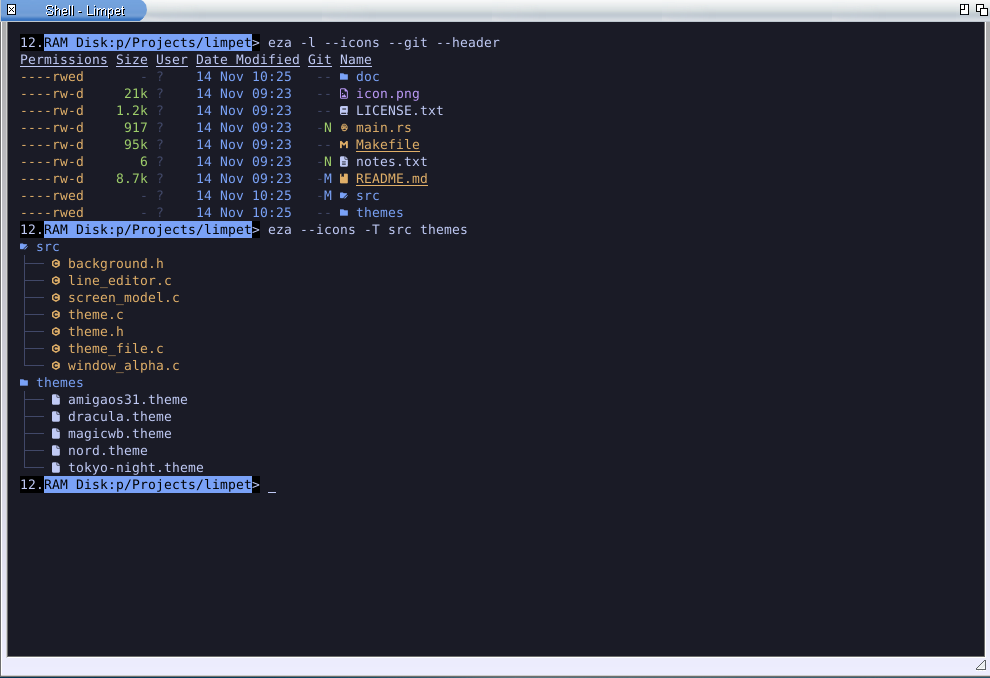
A replacement for List and Dir with colours, file-type icons, a tree view and Git status read straight from the repository. Permissions are the native AmigaDOS hsparwed bits.
apkg install eza eza -l --icons --git --header eza --icons -T src themes
eza asks Limpet whether it can draw the icons and leaves them out if not. They are shown with the bundled font at its default size. Available for ABIv11 distributions and for mainline AROS on PC and the Raspberry Pi. eza for AROS ↗
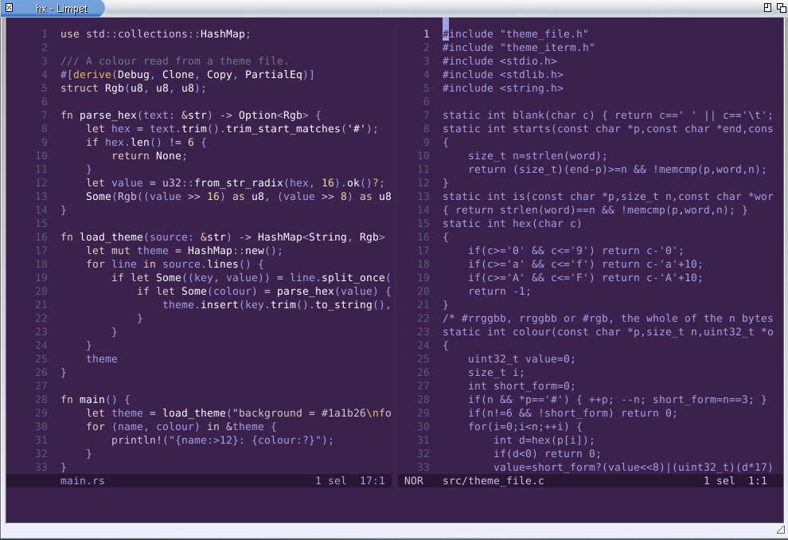
A modal text editor with syntax highlighting, multiple cursors, splits and language-server support. It needs a terminal that can redraw the screen, so it runs in Limpet and not in CON:.
hx main.rs
Available for ABIv11 distributions, where it includes a language server for WebAssembly text files, and for mainline AROS on PC and the Raspberry Pi as the editor alone. Helix for AROS ↗
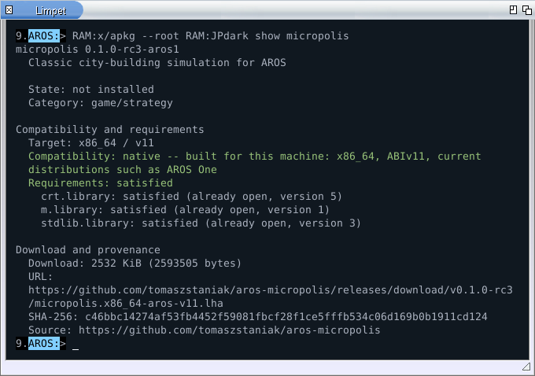
CON: it prints the same information as plain text.Fastfetch shows the system summary at the top of this page. Limpet can run it whenever a new Shell window opens: choose it in Project > Preferences, on the Shell page.
apkg install fastfetch fastfetch -c aros-logo
apkg, the AROS package manager, uses Limpet for coloured results, tables that fit the window and a download bar that stays on one line.
Themes & Preferences
Fifteen themes come with Limpet. Colour files made for Ghostty, Kitty and iTerm2 work as they are.
Download a scheme, put the file into the themes drawer (Preferences has a button that opens it) and pick it from the list. The window behind Preferences shows the choice at once. Use keeps it until the next restart, Save for good, Cancel goes back.
Included: Dracula, Nord, Tokyo Night, Gruvbox Dark, One Dark, Rosé Pine, Catppuccin Mocha and Latte, Solarized Dark and Light, Limpet's own dark, light and high-contrast themes, and two Amiga palettes: MagicWB and Workbench 3.1.
A theme sets the default text and background, the 16 palette colours, the cursor and the selection. Colours a program chooses itself, such as an editor's own scheme, are not changed.
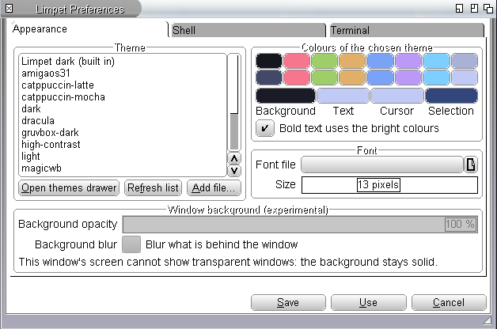
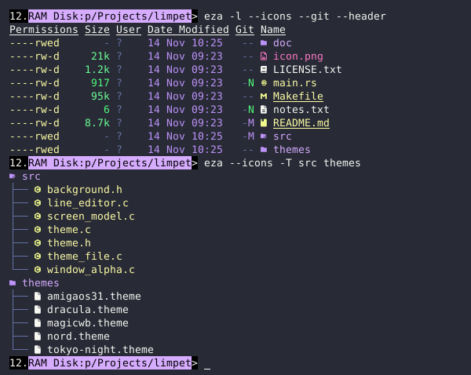
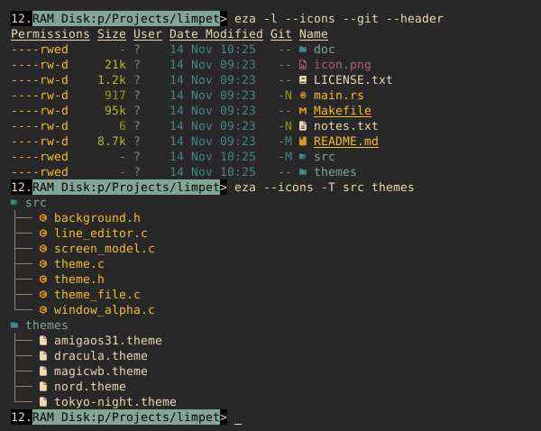
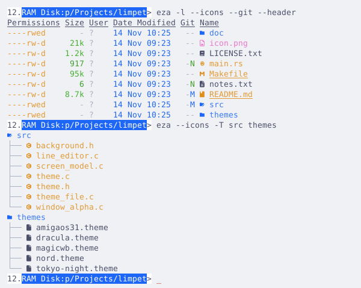
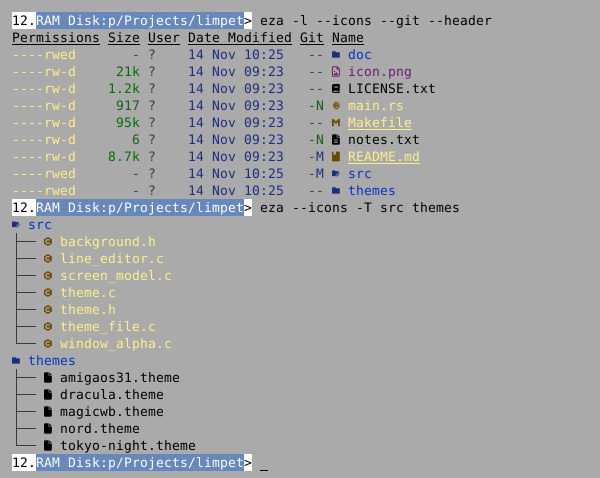
The same eza listing in four of the included themes.
Images
Programs can draw pictures between lines of text, using a subset of the Kitty graphics protocol.
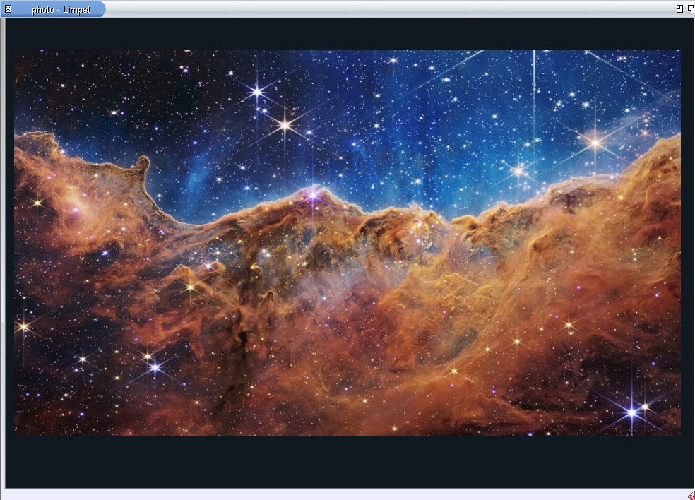
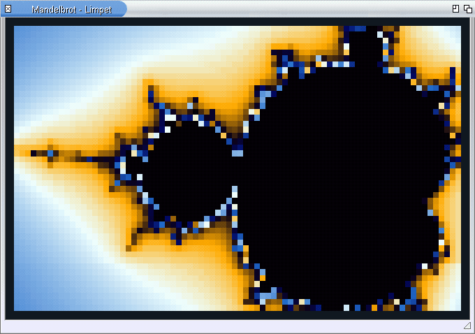
Pictures are sent as raw RGB or RGBA pixels. PNG data and scaling by the terminal are not supported; see the supported subset.
CON: replacement · experimental
A separate download adds LIMPET:, a DOS console handler. One command lets it answer for CON: until the next restart.
Install-Handler. It mounts LIMPET: until the next reboot and writes nothing to the system's start-up files.NewShell WINDOW LIMPET:, or any program that opens LIMPET:0/0/640/200/Title. CON: is untouched.LimpetCON ON makes new CON: windows Limpet windows: NewShell, Execute Command, programs that open their own console. LimpetCON OFF or a restart gives the system console back.The handler reads window names the way CON: does (position, size, title, CLOSE, WAIT, AUTO, SCREEN) and supports the things console programs rely on: line and raw mode, WaitForChar(), break signals, and the Amiga cursor and window reports.
Why it is still experimental: a Limpet console window uses about 19 MiB of memory on mainline AROS and about 30 MiB on ABIv11 distributions, while the system console on mainline uses under 1 MiB. With empty size fields it opens an 80×24 window where CON: opens a strip across the screen. Programs started from Workbench icons have not been checked widely. The handler page lists what matches CON: and what does not.
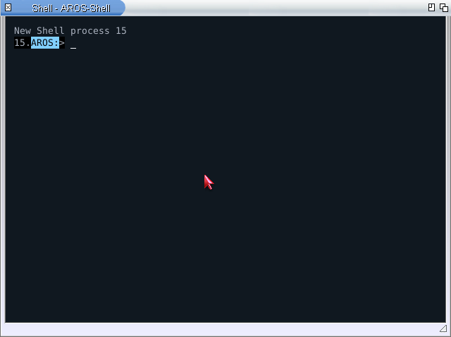
NewShell after LimpetCON ON, AROS One, Limpet 0.10.0.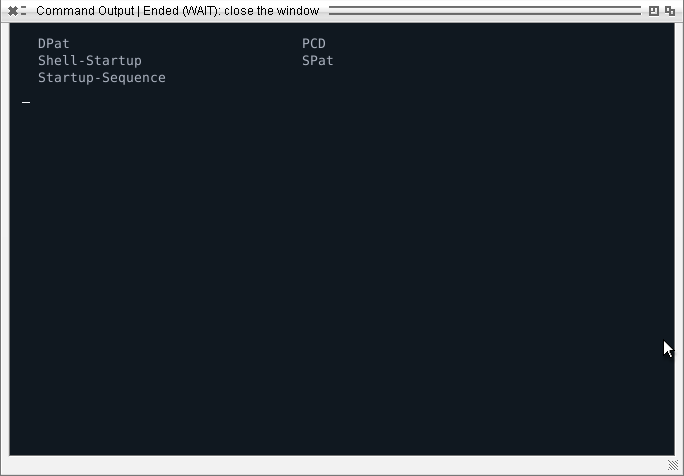
SSH & what is next
The order of work follows the goal: first a console good enough to replace CON:, then the things a modern terminal is used for.
An SSH client for Limpet exists as a preview for mainline AROS, built on libssh and the system's OpenSSL. In tests it opened an interactive session to an OpenSSH server with public-key login and a checked host key; the remote side followed window resizes, Ctrl+C interrupted the remote command, and the remote exit status came back to the AROS Shell.
It is in the source tree (examples/ssh), not in the downloads. Still open: remote full-screen programs, behaviour when the network drops, standard known-hosts handling and a build for ABIv11 distributions.
CON:'s default window placement, a round of Workbench programs, and an optional line for S:User-Startup.The full list, with links to the interfaces proposed for AROS itself, is in the roadmap.
For programmers
A program can ask the console what it supports before it prints anything.
The question is a DOS packet on the output handle. It does not read from the keyboard and does not change terminal modes, so it is safe in scripts and with redirected output. Limpet answers with its colour level, pens, size and input modes; CON: and files answer that they do not know the packet, and the program prints plain text.
The SDK is a small C library with helpers for colours, progress lines, links, window titles and images. Programs that only write text and read lines need none of it: Limpet decodes their UTF-8 output as it is.
LimpetPresentation p;
char red[LIMPET_SEQUENCE_MAX];
fflush(stdout);
if (limpet_query_presentation(Output(), &p, NULL)
== LIMPET_OK &&
limpet_sgr_ansi(red, sizeof red, &p, 1, 0))
printf("%serror:%s file not found\n",
red, LIMPET_SGR_FG_DEFAULT);
else
printf("error: file not found\n");PC / Raspberry Pi
Archives for ABIv11 distributions such as AROS One, for mainline AROS on PC, and a test build for AROS on the Raspberry Pi.
apkg update apkg install limpet
The same command works on all three systems. About the package manager ↗
Copy the Limpet drawer and its icon into SYS:Utilities, then double-click Limpet. The included README lists keys, options and known limitations. The experimental LIMPET: handler is a separate archive in the same release.